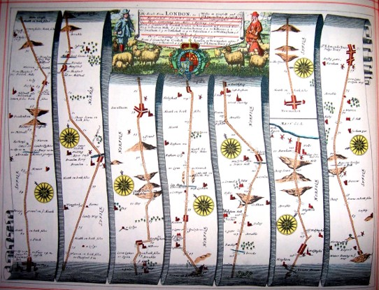
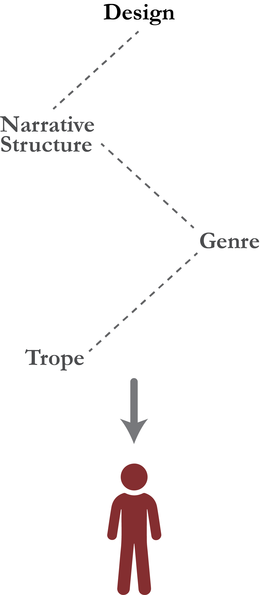

Act 1: About
Map-based visual storytelling
The use of a purposeful and partial sequence of maps, and information graphics to advance a linear spatial story.

Ogilby's Britannia Atlas of 1675

Out in the great alone, ESPN
Significance
Increasing popularity v.s. lack of research
Effective visual storytelling

Reshaping New York- New York Times

The Two Koreas- Esri Story Maps
Visual story design
